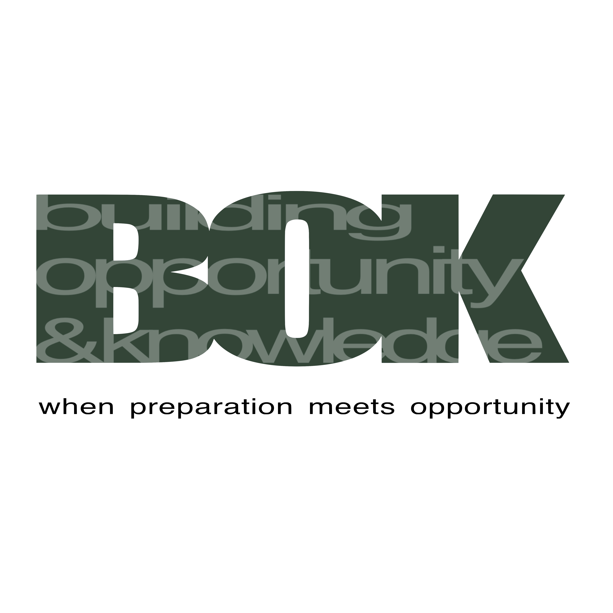

BOK (복) is built on a simple idea: luck is when preparation meets opportunity. Derived from the Korean word for “luck,” BOK stands for Building Opportunity through Knowledge—preparing early so opportunity is never left to chance.
Finance recruiting has become increasingly accelerated, with many students arriving at college already behind. Applications for junior-year summer roles can open as early as December of sophomore year, making early exposure critical.
BOK is an initiative run by college students for high school students, focused on bridging this gap. Our goal is to equip students with the knowledge, skills, and network needed to confidently pursue careers in finance—before they even step onto campus.
ABOUT THE FOUNDER
My name is Jungbeen “Estelle” Lee, and I am a second-year student at Baruch College, majoring in Statistics with a minor in Economics and a graduate from Salpointe Catholic High School. I am currently interning at Raidillon Capital Management and have accepted an offer to join Barclays Investment Bank as an incoming 2027 Summer Investment Banking Analyst.
As an international student from a non-target school, I successfully navigated the highly competitive investment banking recruiting process. However, I vividly remember how overwhelming it felt as a freshman without a clear understanding of what finance was, how to network, or even how to format my resume.
This experience motivated me to expand early access to finance education and recruiting resources for high school students, particularly those who may not otherwise have exposure to these opportunities. Through BOK, I aim to provide students with the guidance and confidence I wish I had when I started my college and recruiting journey.